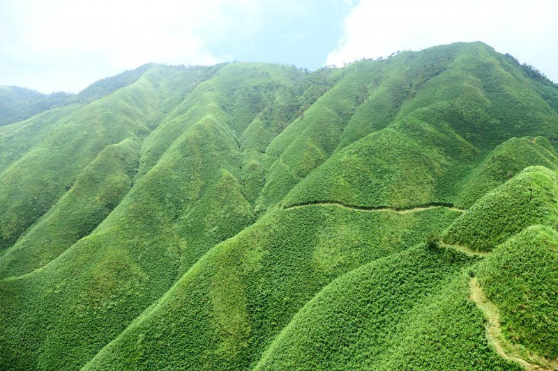
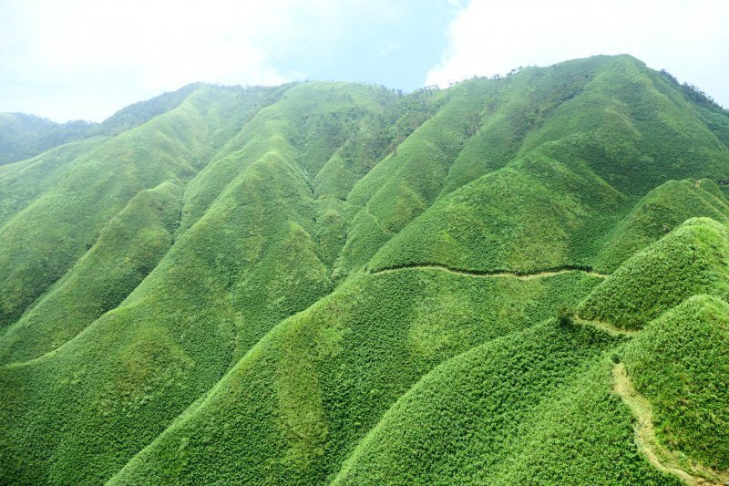

景點介紹
抹茶山原本的名字並不是抹茶山，真正的名稱其實是宜蘭礁溪的郊山─「三角崙山」，
它是雪山山脈自東北角起第二座1000公尺以上的山峰，也是蘭陽五大名山之一， 亦為台灣小百岳。而這條原本山友才知道的登山秘境， 因為一位熱愛台灣的日本攝影師小林賢伍攻頂上傳了照片，並取名為「臺灣の抹茶冰淇淋山」， 才讓這條山路變成IG打卡熱門路線！ 抹茶山原本的名字並不是抹茶山，真正的名稱其實是宜蘭礁溪的郊山─「三角崙山」，
它是雪山山脈自東北角起第二座1000公尺以上的山峰，也是蘭陽五大名山之一， 亦為台灣小百岳。而這條原本山友才知道的登山秘境， 因為一位熱愛台灣的日本攝影師小林賢伍攻頂上傳了照片，並取名為「臺灣の抹茶冰淇淋山」， 才讓這條山路變成IG打卡熱門路線！ 